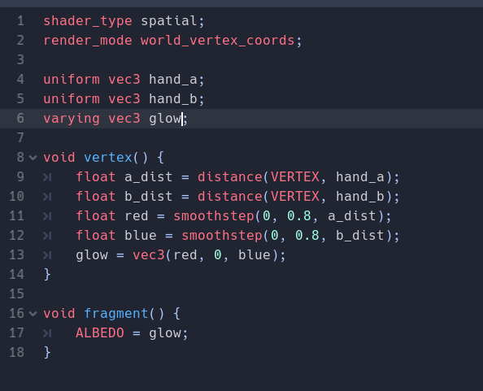

CPS 643 Virtual Reality
Lab 5
Carson Cass
Three shaders are implemented:
- Basic Color: fragment shader that outputs a solid color. Applied to the turqoise sphere.
- Spatial: uses sin and time uniform to create a wave.
- Interactable: passed controller position via uniform, distance used to shade parts you get near. 

Passes in uniforms for remotes